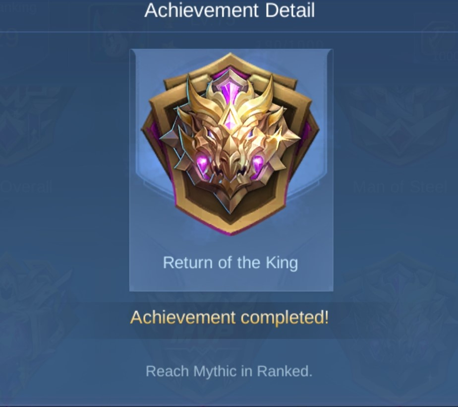
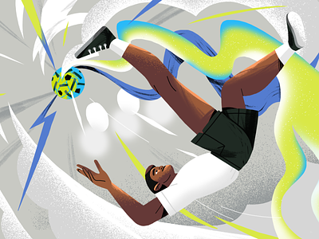
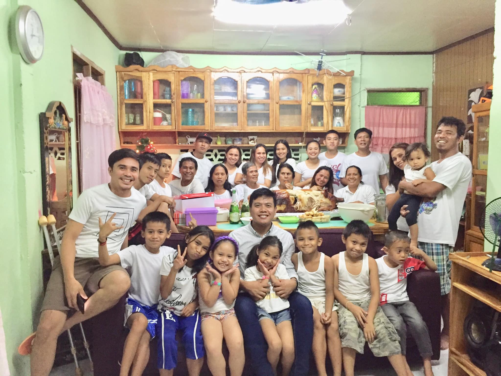

| REACHING THE MYTHIC RANK IN MOBILE LEGENDS |
|---|
|

I have been playing a game called mobile legends
|
| ME GRADUATING HIGH SCHOOL |
|---|
| High School was a very big struggle for me since it really took me a lot of effort just to get by each semester. But thankfully i survived it with the help of my friends and the support of my family. The standards of the school i attended was quite high not when it comes to enrollment but when it comes to making us pass or giving us grades so even though i always just barely passed I am quite happy and proud about the fact that i passed. |
| SEPAK TAKRAW |
|---|
|

Sepak Takraw is a sport that is very much similar to volley ball but the twist is that the ball has many holes on it and once the game starts no one is allowed to made contact with the ball with their hands, and players would have to make use of their legs,knee, head, toes and chest to strike the takraw ball. The fact that players can't use their hands in striking the ball totally makes it so difficult and fun. Though I am not a master of it, being able to play it in an amateur level makes me quite proud of myself. Since learning it was so hard, jus being able to play it gives me a big sense of achievement. |
| MY FAMILY |
|---|
|

They are the most amazing people I have ever known, as people they have many traits that makes them amazing, they act what they say even if its hard. They are strict yet very caring, I consider them as my Backbone, my Life support and my biggest source of strength.No matter what the circumstances are, even if we almost don't have anything for ourselves us, each and everyone always try and give their best to help the member who is in need the most, without fail. My family never turns away,from any of its members especialy on times of need, as it had been time and time again. I guess biggest achievement we had is that all of us survive together through tough times without ever breaking our bonds. |
Thank you for visiting!